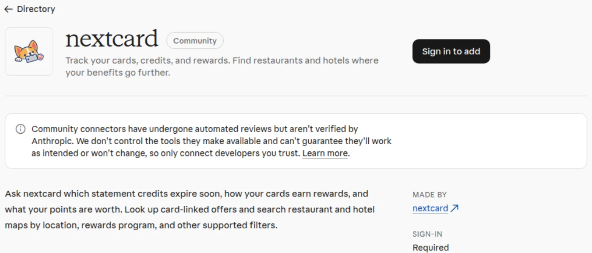
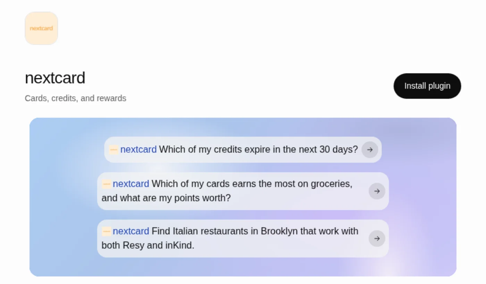

Connect to Claude
- Open the nextcard directory listing below. Sign in to Claude if prompted, then choose Connect to Claude.
- In a chat, open the + menu, choose Connectors, and turn on nextcard.

I built a tool to answer the question I always have before booking a trip: which hotels can I use my card credits at, and what do they usually cost?
It lets me compare Chase’s The Edit, Amex Fine Hotels + Resorts, The Hotel Collection, and United Renowned Hotels in one chat. I use the estimated nightly rates to narrow things down, then check my dates and the live price before booking.
The connector is called nextcard. Hotel searches are free and work without a nextcard account.


In Muse, Gemini, Perplexity, or another app that supports remote MCP servers, open the connector settings.
https://mcp.nextcard.com/mcpIf you want answers about the cards in your own wallet, you can sign in to nextcard when you connect.
Pick a question to ask in your chat.
Which hotels in Chicago are in Chase’s The Edit or Amex Fine Hotels + Resorts, and which look cheapest?
Which hotels in Paris have estimated rates under $500 a night, and which card programs are they in?
Which Hyatt hotels in Tokyo participate in a card program, and what’s the lowest estimated nightly rate at each?
Is The Ritz-Carlton, Kyoto in Fine Hotels + Resorts or The Hotel Collection?
Show me hotels within 25 miles of Napa and the card programs I can book each one through.